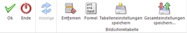

Oft ist es erforderlich, dass die Erfassung nicht nach Arbeitnehmer und Lohnarten erfolgen soll, sondern die Erfassung wird nach einer Liste vorgenommen, wo jeweils nur die AN-Nummer und z.B. die Stundenanzahl ausgewiesen sind. Damit bei dieser Art der Erfassung nicht jeder AN in der Einzelabrechnung aufgerufen werden muss, gibt es die Chaos Erfassung.
Die Chaos Erfassung wird über den Menüpunkt
1 Abrechnen
1 Chaos Erfassung
aufgerufen. Das Fenster ist in mehrere Register unterteilt, die auch verschiedene Aufgaben lösen:
ü AN-Info
Hier können der Reihe
nach die AN-Nummern, die gewünschten Lohnarten und die dazugehörigen Beträge
(abhängig von der in der Lohnart hinterlegten Zeilenformel) erfasst werden.
ü Selektion
Über das Register
Selektion kann eine oder mehrere Lohnarten für mehrere AN aufgerufen werden
(z.B. Acontozahlungen), wobei auch hier wieder die Formeln der Lohnarten
abgearbeitet werden können.
ü Einzelerfassung
Wurde bereits
eine AN-Nummer eingegeben, kann von der Chaos-Erfassung direkt in die
Einzelerfassung gewechselt werden. Dort werden - sofern das nicht schon passiert
ist - die automatischen Lohnarten abgearbeitet, obwohl bereits Erfassungszeilen
vorhanden sind.
Die Funktionen im Detail:
AN-Info
Die AN-Info dient zur Erfassung von Lohnarten, wobei die Reihenfolge der AN und Lohnarten nicht vorgegeben ist. Beispiele für die Anwendung der Chaos-Erfassung über die AN-Info wäre eine Stundenaufstellung eines Poliers, auf dem nur die AN-Nr., der Name und die Anzahl der Stunden und Überstunden steht - diese Stundenaufstellung gibt es aber für X Baustellen und alle AN haben auf mehreren Baustellen gearbeitet.
Die Erfassung in diesem Fenster ist demnach einfach gestaltet:
Ø Zl.
In diesem Feld wird eine fortlaufende Nummer angezeigt.
Ø Arbeitnehmer
Hier kann die AN-Nummer eingegeben werden. Wie die AN-Nummer eingegeben werden kann, dazu gibt es mehrere Möglichkeiten. Details dazu entnehmen Sie bitte dem Kapitel Aufruf einer AN-Nummer.
Wenn ein AN eingetragen wird, für den in der Periode bereits eine Abrechnung vorhanden ist, wird eine entsprechende Meldung angezeigt, und der AN kann nicht erfasst werden. Wurde ein AN eingetragen, dann werden die entsprechenden AN-Infos im oberen Teil des Fensters angezeigt.
Ø Sub
Bei Verwendung von SUB-AN wird hier die SUB-AN-Nummer angezeigt.
Ø Name
Zusätzlich zur AN-Info im oberen Bereich wir der Name des AN auch in der Erfassungstabelle angezeigt.
Ø Lohnart
In diesem Feld kann die gewünschte Lohnart eingegeben werden. Durch Drücken der F9-Taste kann nach allen bestehenden Lohnarten gesucht werden. Nach Bestätigung der Lohnart wird die Lohnartenbezeichnung im Feld Bezeichnung angezeigt. Gleichzeitig wird die in der Lohnart hinterlegte Zeilenformel abgearbeitet - je nachdem, welche Funktion hinter der Formel steht, können Eingaben vorgenommen werden. D.h. die Felder Stunden, Satz und Betrag können nur durch eine entsprechende Zeilenformel befüllt werden. Wenn z.B. bei einer Überstundenberechnung der Satz über die Belegformel erfolgt, so kann es auch sein, dass in der Chaos-Erfassung die Felder Satz und Betrag leer bleiben. Unterhalb der Tabelle wird eine Summe der erfassten Stunden bzw. eine Summe der Gesamtbeträge der Zeilen angezeigt.
Ø K.-Stelle
In diesem Feld wird die Kostenstelle aus dem AN-Stamm vorgeschlagen und kann ggf. über die Zeilenformel oder direkt verändert werden. Handelt es sich bei der Lohnart um eine Sonderzahlung und ist in den Betriebsdaten eine "Hilfskostenstelle für Sonderzahlungen" hinterlegt, dann wird diese Kostenstelle vorgeschlagen.
Ø K.-Art
In diesem Feld wird die Kostenart gemäß den Einstellungen der LOHN-Parameter vorgeschlagen und kann ggf. über die Zeilenformel oder direkt verändert werden.
Ø K.-Träger
In diesem Feld wird der Kostenträger aus dem AN-Stamm vorgeschlagen und kann ggf. über die Zeilenformel oder direkt verändert werden.
Die drei Felder K.-Stelle, K.-Art und K.-Träger werden nicht befüllt, wenn in der Lohnart die Checkbox "keine Kostenrechnung" aktiviert ist. Wenn im AN-Stamm im Register "Profit Center" die Option "Aufteilung erfolgt nach den oben eingetragenen Verteilungsschlüssel" eingestellt ist, dann kann das Feld K.-Stelle nicht verändert werden.
In der Tabelle können beliebig viele Zeilen erfasst werden, wobei sowohl AN als auch Lohnarten öfters vorkommen können.
Buttons

Ø OK
Durch Anklicken des OK-Buttons werden die Erfassungszeilen bei den jeweiligen AN gespeichert.
Ø Ende
Durch Drücken der ESC-Taste wird das Fenster geschlossen. Sind noch nicht gespeicherte Erfassungszeilen vorhanden, erfolgt eine Abfrage:
Ø Anzeige
Dieser Button ist im Register Selektion aktiv. Nachdem eine Selektion getroffen wurde, werde mittels Anzeigen Button die entsprechenden Daten geladen.
Ø Entfernen
Durch Anklicken des Entfernen-Buttons können erfasste Zeilen wieder gelöscht werden.
Ø Formel
Durch Anklicken des Formel-Buttons kann in der aktiven Zeile nochmals die Zeilenformel aufgerufen werden.
Wird die Meldung mit JA bestätigt, werden die entsprechenden Erfassungszeilen gespeichert. Wird die Meldung mit NEIN bestätigt, werden die Erfassungszeilen gelöscht.
Selektion
Im Register Selektion können eine oder mehrere Lohnarten für einen oder mehrere AN auf einmal erfasst werden (z.B. einmalige Acontozahlungen, Prämien oder dergleichen). Dazu stehen folgende Eingabefelder zur Verfügung:
Ø Arbeitnehmer von - bis
Einschränkung der AN für die Lohnarten erfasst werden sollen. Wie die AN-Nummer eingegeben werden kann, dazu gibt es mehrere Möglichkeiten. Details dazu entnehmen Sie bitte dem Kapitel Aufruf einer AN-Nummer.
Ø Periode - Monat, Jahr
Aus den beiden Auswahllistboxen kann das Monat und das Jahr gewählt werden, für das die Erfassung durchgeführt werden soll. Dabei können auch Zeiträume nach der aktuellen Abrechnungsperiode ausgewählt werden (es kann z.B. im Oktober bereits eine Prämienzahlung erfasst werden, die erst im Dezember ausbezahlt wird). Zeiträume in der Vergangenheit können hier nicht angesprochen werden (nachträgliche Erfassungszeilen müssen über die Rollung abgerechnet werden).
Ø Lohnart von - bis
Einschränkung der Lohnarten, die erfasst werden sollen. über die Matchcode-Funktion (F9-Taste) kann nach allen vorhandenen Lohnarten gesucht werden.
Durch Anklicken des Anzeige-Button werden die AN und Lohnarten in die Tabelle gefüllt, wobei für jede Erfassungszeile die Zeilenformel abgearbeitet wird. Wenn bereits erfasste Werte geändert werden sollen, so wird dafür in das Register AN-Info gewechselt, wo dann z.B. durch Anklicken des Formel-Button Veränderungen vorgenommen werden könne.
Wird im Register Selektion eine weitere Einschränkung getroffen und soll diese durch Anklicken des Anzeige-Button übernommen werden, kann entschieden werden, ob die bereits vorhanden Daten gespeichert werden sollen, oder ob die zuvor erfassten Daten verworfen werden sollen.
Einzelerfassung
Wir das Register Einzelerfassung angewählt, gelangt man in die gewohnte Einzelerfassung, wobei hier zwei Möglichkeiten bestehen:
ü Der AN wurde bereits einmal
erfasst:
In diesem Fall werden bereits erfassten Lohnarten inkl. der in der
Chaoserfassung erfassten Zeilen angezeigt.
ü Der AN wurde in der
Einzelabrechnung noch nicht erfasst:
In diesem Fall werden die beim AN
hinterlegten automatischen Lohnarten abgerufen. Die über die Chaos-Erfassung
erfassten Zeilen werden auch übernommen.
Danach können die gewohnten Aktionen in der Einzelabrechnung durchgeführt werden.